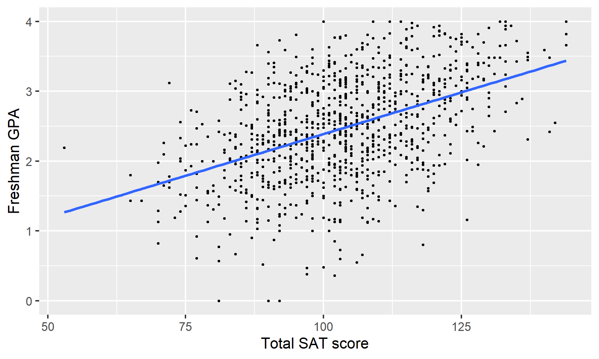
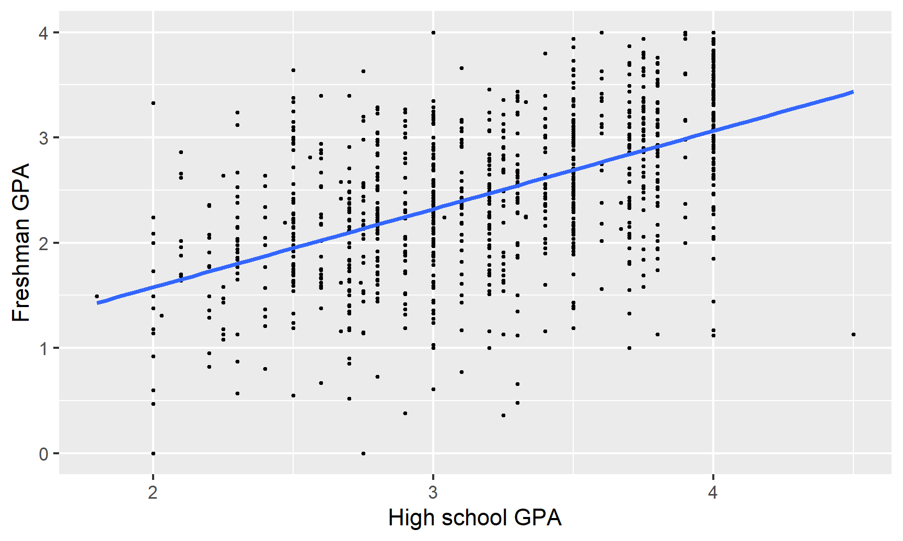
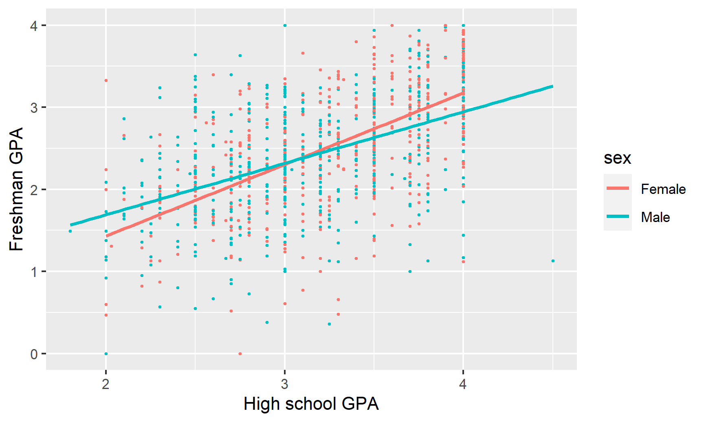

Educational Testing Service (ETS), the creator of the SAT, collected SAT scores, high school GPAs, and freshman-year-college GPAs for 1,000 students at an unnamed university.1
You are a university admissions officer and you are curious if SAT scores really do predict college performance. You’re also interested in other factors that could influence student performance.
The data contains 6 variables:
sex: The sex of the student (male or female; female is the base case)
sat_verbal: The student’s percentile score in the verbal section of the SAT
sat_math: The student’s percentile score in the math section of the SAT
sat_total: sat_verbal + sat_math
gpa_hs: The student’s GPA in high school at graduation
gpa_fy: The student’s GPA at the end of their freshman year
Code
# First we load the libraries and datalibrary(tidyverse) # This lets you create plots with ggplot, manipulate data, etc.library(broom) # This lets you convert regression models into nice tableslibrary(modelsummary) # This lets you combine multiple regression models into a single table
Code
# Load the data.# It'd be a good idea to click on the "sat_gpa" object in the Environment panel# in RStudio to see what the data looks like after you load it.sat_gpa <-read_csv("data/sat_gpa.csv")
Exploratory questions
How well do SAT scores correlate with freshman GPA?
Code
# Note the syntax here with the $. That lets you access columns. The general# pattern is name_of_data_set$name_of_columncor(sat_gpa$gpa_fy, sat_gpa$sat_total)## [1] 0.46
SAT scores and first-year college GPA are moderately positively correlated (r = 0.46). As one goes up, the other also tends to go up.
Here’s what that relationship looks like:
Code
ggplot(sat_gpa, aes(x = sat_total, y = gpa_fy)) +geom_point(size =0.5) +geom_smooth(method ="lm", se =FALSE) +labs(x ="Total SAT score", y ="Freshman GPA")

How well does high school GPA correlate with freshman GPA?
Code
cor(sat_gpa$gpa_fy, sat_gpa$gpa_hs)## [1] 0.54
High school and freshman GPAs are also moderately correlated (r = 0.54), but with a slightly stronger relationship.
Here’s what that relationship looks like:
Code
ggplot(sat_gpa, aes(x = gpa_hs, y = gpa_fy)) +geom_point(size =0.5) +geom_smooth(method ="lm", se =FALSE) +labs(x ="High school GPA", y ="Freshman GPA")

Is the correlation between SAT scores and freshman GPA stronger for men or for women?
Code
# We can calculate the correlation for subgroups within the data with slightly# different syntax. Notice how this uses the pipe (%>%), which makes it read# like English. We can say "Take the sat_gpa data set, split it into groups# based on sex, and calculate the correlation between sat_total and gpa_fy in# each of the groupssat_gpa %>%group_by(sex) %>%summarize(correlation =cor(sat_total, gpa_fy))## # A tibble: 2 × 2## sex correlation## <chr> <dbl>## 1 Female 0.493## 2 Male 0.481
We can calculate the correlation between SAT scores and freshman GPA for both sexes to see if there are any differences. The correlation is slightly stronger for women, but it’s hardly noticeable (r = 0.49 for females, r = 0.48 for males)
This is apparent visually if we include a trendline for each sex. The lines are essentially parallel:
Code
# The only difference between this graph and the earlier two is that it is# coloring by sexggplot(sat_gpa, aes(x = gpa_hs, y = gpa_fy, color = sex)) +geom_point(size =0.5) +geom_smooth(method ="lm", se =FALSE) +labs(x ="High school GPA", y ="Freshman GPA")

Is the correlation between high school GPA and freshman GPA stronger for men or for women?
Code
sat_gpa %>%group_by(sex) %>%summarize(correlation =cor(gpa_hs, gpa_fy))## # A tibble: 2 × 2## sex correlation## <chr> <dbl>## 1 Female 0.597## 2 Male 0.483
There is a noticeable difference between men and women in the correlation between high school and college GPA. For men, the two are moderately correlated (r = 0.48), while for women the relationship is much stronger (r = 0.60). High school grades might be a better predictor of college grades for women than for men.
Models
Do SAT scores predict freshman GPAs?
We can build a model that predicts college GPAs (our outcome variable, or dependent variable) using SAT scores (our main explanatory variable):
model_sat_gpa <-lm(gpa_fy ~ sat_total, data = sat_gpa)# Look at the model results and include confidence intervals for the coefficientstidy(model_sat_gpa, conf.int =TRUE)## # A tibble: 2 × 7## term estimate std.error statistic p.value conf.low conf.high## <chr> <dbl> <dbl> <dbl> <dbl> <dbl> <dbl>## 1 (Intercept) 0.00193 0.152 0.0127 9.90e- 1 -0.296 0.300 ## 2 sat_total 0.0239 0.00146 16.4 1.39e-53 0.0210 0.0267
Here’s what these coefficients mean:
The intercept (or \(\beta_0\)) is 0.002, which means that the average freshman GPA will be 0.002 when the total SAT percentile score is 0. This is a pretty nonsensical number (nobody has a score that low), so we can ignore it.
The slope of sat_total (or \(\beta_1\)) is 0.024, which means that a 1 percentile increase in SAT score is associated with a 0.024 point increase in GPA, on average.
We can look at the summary table of the regression to check the \(R^2\):
The \(R^2\) here is 0.212, which means that SAT scores explain 21% of the variation in freshman GPA. It’s not a fantastic model, but it explains some stuff.
Does a certain type of SAT score have a larger effect on freshman GPAs?
The sat_total variable combines both sat_math and sat_verbal. We can disaggregate the total score to see the effect of each portion of the test on freshman GPA, using the following model:
Again, the intercept is meaningless since no student has a zero on both the verbal and the math test. The slope for sat_verbal (or \(\beta_1\)) is 0.025, so a one percentile point increase in the verbal SAT is associated with a 0.025 point increase in GPA, on average, controlling for math scores. Meanwhile, a one percentile point increase in the math SAT (\(\beta_2\)) is associated with a 0.022 point increase in GPA, on average, controlling for verbal scores. These are essentially the same, so at first glance, it doesn’t seem like the type of test has substantial bearing on college GPAs.
The adjusted \(R^2\) (which we need to look at because we’re using more than one explanatory variable) is 0.211, which means that this model explains 21% of the variation in college GPA. Like before, this isn’t great, but it tells us a little bit about the importance of SAT scores.
The intercept here (\(\beta_0\)) is 0.091, which means that a student with a high school GPA of zero would have a predicted freshman GPA of 0.091, on average. This is nonsensical, so we can ignore it. The slope for gpa_hs (\(\beta_1\)), on the other hand, is helpful. For every 1 point increase in GPA (i.e. moving from 2.0 to 3.0, or 3.0 to 4.0), there’s an associated increase in college GPA of 0.743 points, on average.
The \(R^2\) value is 0.295, which means that nearly 30% of the variation in college GPA can be explained by high school GPA. Neat.
Here, stuff gets interesting. The intercept (\(\beta_0\)) is once again nonsensical—females with a 0 score on their SAT would have a -0.027 college GPA on average. There’s a positive effect with our \(\beta_1\) (or sat_total), since controlling for sex, a one percentile point increase in SAT scores is associated with a 0.026 point increase in freshman GPA, on average. If we control for SAT scores, males see an average drop of 0.274 points (\(\beta_2\)) in their college GPAs.
The combination of these two variables, however, doesn’t boost the model’s explanatory power that much. The adjusted \(R^2\) (which we must look at because we’re using more than one explanatory variable) is 0.243, meaning that the model explains a little over 24% of the variation in college GPAs.
We can say the following things about these results:
Yet again, the intercept (\(\beta_0\)) can be safely ignored. Here it means that a female with a 0.0 high school GPA and an SAT score of 0 would have a college GPA of -0.84, on average. That’s pretty impossible.
The \(\beta_1\) coefficient for sat_total indicates that taking into account high school GPA and sex, a one percentile point increase in a student’s SAT score is associated with a 0.016 point increase in their college GPA, on average.
Controlling for SAT scores and sex, a one point increase in high school GPA is associated with a 0.545 point (this is \(\beta_2\)) increase in college GPA, on average. This coefficient is lower than the 0.74 point coefficient we found previously. That’s because SAT scores and sex soaked up some of high school GPA’s explanatory power.
Taking SAT scores and high school GPAs into account, males have a 0.143 point lower GPA in college, on average (this is \(\beta_3\))
As always, the adjusted \(R^2\) shows us how well the model fits overall (again, we have to look at the adjusted \(R^2\) because we have more than one explanatory variable). In this case, the model explains 36.5% of the variation in college GPA, which is higher than any of the previous models (but not phenomenal, in the end).
Which model best predicts freshman GPA? How do you know?
As you’ve learned in previous stats classes, adjusted \(R^2\) generally shows the strength of a model’s fit, or how well the model will predict future values of the outcome variable. If we compare the adjusted \(R^2\) for each of the models, we see that the “best” model is the last one.
Code
# The modelsummary() function takes a bunch of different regression models and# puts them in a neat side-by-side table. In a normal report or analysis, you'd# include all of these once instead of going one by one like we did above.modelsummary(list(model_sat_gpa, model_sat_gpa_types, model_sat_gpa_hs, model_sat_sex, model_sat_hs_sex))
---title: "Regression"---If you want to follow along with this example, you can download the data below:- [{{< fa table >}} `sat_gpa.csv`](/files/data/external_data/sat_gpa.csv)You can also download a complete `.zip` file with a finished R Markdown file that you can knit and play with on your own:- [{{< fa file-archive >}} `regression-example.zip`](/projects/regression-example.zip)## Live coding example<divclass="ratio ratio-16x9"><iframesrc="https://www.youtube.com/embed/E-Zz5S5NOUo"frameborder="0"allow="accelerometer; autoplay; encrypted-media; gyroscope; picture-in-picture"allowfullscreen></iframe></div>## Complete code*(This is a heavily cleaned up and annotated version of the code from the video.)*```{r setup, include=FALSE}knitr::opts_chunk$set(fig.width =6, fig.height =3.6, fig.align ="center",fig.retina =3, collapse =TRUE)set.seed(1234)options("digits"=2, "width"=150)```### IntroductionSAT scores have long been a major factor in college admissions, under the assumption that students with higher test scores will perform better in college and receive a higher GPA. The SAT's popularity [has dropped in recent years](https://www.washingtonpost.com/news/answer-sheet/wp/2017/04/12/the-list-of-test-optional-colleges-and-universities-keeps-growing-despite-college-boards-latest-jab/), though, and this summer, the [University of Chicago announced that it would stop requiring SAT scores for all prospective undergraduates](http://www.chicagotribune.com/news/local/breaking/ct-university-chicago-sat-act-20180614-story.html).Educational Testing Service (ETS), the creator of the SAT, collected SAT scores, high school GPAs, and freshman-year-college GPAs for 1,000 students at an unnamed university.[^note][^note]: This is real data about real students, [compiled and cleaned by a professor at Dartmouth.](https://www.dartmouth.edu/~chance/course/Syllabi/Princeton96/Class12.html)You are a university admissions officer and you are curious if SAT scores really do predict college performance. You're also interested in other factors that could influence student performance.The data contains 6 variables:- `sex`: The sex of the student (male or female; female is the base case)- `sat_verbal`: The student's *percentile* score in the verbal section of the SAT- `sat_math`: The student's *percentile* score in the math section of the SAT- `sat_total`: `sat_verbal` + `sat_math`- `gpa_hs`: The student's GPA in high school at graduation- `gpa_fy`: The student's GPA at the end of their freshman year```{r load-libraries, message=FALSE, warning=FALSE}# First we load the libraries and datalibrary(tidyverse) # This lets you create plots with ggplot, manipulate data, etc.library(broom) # This lets you convert regression models into nice tableslibrary(modelsummary) # This lets you combine multiple regression models into a single table``````{r load-data-fake, eval=FALSE}# Load the data.# It'd be a good idea to click on the "sat_gpa" object in the Environment panel# in RStudio to see what the data looks like after you load it.sat_gpa <-read_csv("data/sat_gpa.csv")``````{r load-data-real, include=FALSE}sat_gpa <-read_csv(here::here("files", "data", "external_data", "sat_gpa.csv"))```### Exploratory questions#### How well do SAT scores correlate with freshman GPA?```{r sat-gpa-correlation}# Note the syntax here with the $. That lets you access columns. The general# pattern is name_of_data_set$name_of_columncor(sat_gpa$gpa_fy, sat_gpa$sat_total)```SAT scores and first-year college GPA are moderately positively correlated (r = 0.46). As one goes up, the other also tends to go up.Here's what that relationship looks like:```{r plot-sat-gpa-correlation, message=FALSE}ggplot(sat_gpa, aes(x = sat_total, y = gpa_fy)) +geom_point(size =0.5) +geom_smooth(method ="lm", se =FALSE) +labs(x ="Total SAT score", y ="Freshman GPA")```#### How well does high school GPA correlate with freshman GPA?```{r hs-gpa-correlation}cor(sat_gpa$gpa_fy, sat_gpa$gpa_hs)```High school and freshman GPAs are also moderately correlated (r = 0.54), but with a slightly stronger relationship.Here's what that relationship looks like:```{r plot-hs-gpa-correlation, message=FALSE}ggplot(sat_gpa, aes(x = gpa_hs, y = gpa_fy)) +geom_point(size =0.5) +geom_smooth(method ="lm", se =FALSE) +labs(x ="High school GPA", y ="Freshman GPA")```#### Is the correlation between SAT scores and freshman GPA stronger for men or for women?```{r sat-gpa-correlation-sex}# We can calculate the correlation for subgroups within the data with slightly# different syntax. Notice how this uses the pipe (%>%), which makes it read# like English. We can say "Take the sat_gpa data set, split it into groups# based on sex, and calculate the correlation between sat_total and gpa_fy in# each of the groupssat_gpa %>%group_by(sex) %>%summarize(correlation =cor(sat_total, gpa_fy))```We can calculate the correlation between SAT scores and freshman GPA for both sexes to see if there are any differences. The correlation is slightly stronger for women, but it's hardly noticeable (r = 0.49 for females, r = 0.48 for males)This is apparent visually if we include a trendline for each sex. The lines are essentially parallel:```{r plot-sat-gpa-correlation-sex, message=FALSE}# The only difference between this graph and the earlier two is that it is# coloring by sexggplot(sat_gpa, aes(x = gpa_hs, y = gpa_fy, color = sex)) +geom_point(size =0.5) +geom_smooth(method ="lm", se =FALSE) +labs(x ="High school GPA", y ="Freshman GPA")```#### Is the correlation between high school GPA and freshman GPA stronger for men or for women?```{r hs-gpa-correlation-sex}sat_gpa %>%group_by(sex) %>%summarize(correlation =cor(gpa_hs, gpa_fy))```There is a noticeable difference between men and women in the correlation between high school and college GPA. For men, the two are moderately correlated (r = 0.48), while for women the relationship is much stronger (r = 0.60). High school grades might be a better predictor of college grades for women than for men.### Models#### Do SAT scores predict freshman GPAs?We can build a model that predicts college GPAs (our outcome variable, or dependent variable) using SAT scores (our main explanatory variable):$$\text{freshman GPA} = \beta_0 + \beta_1 \text{SAT total} + \epsilon$$```{r model-sat-gpa}model_sat_gpa <-lm(gpa_fy ~ sat_total, data = sat_gpa)# Look at the model results and include confidence intervals for the coefficientstidy(model_sat_gpa, conf.int =TRUE)```Here's what these coefficients mean:- The intercept (or $\beta_0$) is 0.002, which means that the average freshman GPA will be 0.002 when the total SAT percentile score is 0. This is a pretty nonsensical number (nobody has a score that low), so we can ignore it.- The slope of `sat_total` (or $\beta_1$) is 0.024, which means that a 1 percentile increase in SAT score is associated with a 0.024 point increase in GPA, on average.We can look at the summary table of the regression to check the $R^2$:```{r model-sat-gpa-details}glance(model_sat_gpa)```The $R^2$ here is 0.212, which means that SAT scores explain 21% of the variation in freshman GPA. It's not a fantastic model, but it explains some stuff.#### Does a certain type of SAT score have a larger effect on freshman GPAs?The `sat_total` variable combines both `sat_math` and `sat_verbal`. We can disaggregate the total score to see the effect of each portion of the test on freshman GPA, using the following model:$$\text{freshman GPA} = \beta_0 + \beta_1 \text{SAT verbal} + \beta_2 \text{SAT math} + \epsilon$$```{r model-sat-math-verbal}model_sat_gpa_types <-lm(gpa_fy ~ sat_verbal + sat_math, data = sat_gpa)tidy(model_sat_gpa_types, conf.int =TRUE)```Again, the intercept is meaningless since no student has a zero on both the verbal and the math test. The slope for `sat_verbal` (or $\beta_1$) is 0.025, so a one percentile point increase in the verbal SAT is associated with a 0.025 point increase in GPA, on average, controlling for math scores. Meanwhile, a one percentile point increase in the math SAT ($\beta_2$) is associated with a 0.022 point increase in GPA, on average, controlling for verbal scores. These are essentially the same, so at first glance, it doesn't seem like the type of test has substantial bearing on college GPAs.The adjusted $R^2$ (which we need to look at because we're using more than one explanatory variable) is 0.211, which means that this model explains 21% of the variation in college GPA. Like before, this isn't great, but it tells us a little bit about the importance of SAT scores.```{r model-sat-math-verbal-gpa-details}glance(model_sat_gpa_types)```#### Do high school GPAs predict freshman GPAs?We can also use high school GPA to predict freshman GPA, using the following model:$$\text{freshman GPA} = \beta_0 + \beta_1 \text{high school GPA} + \epsilon$$```{r model-hs-college-gpa}model_sat_gpa_hs <-lm(gpa_fy ~ gpa_hs, data = sat_gpa)tidy(model_sat_gpa_hs)```The intercept here ($\beta_0$) is 0.091, which means that a student with a high school GPA of zero would have a predicted freshman GPA of 0.091, on average. This is nonsensical, so we can ignore it. The slope for `gpa_hs` ($\beta_1$), on the other hand, is helpful. For every 1 point increase in GPA (i.e. moving from 2.0 to 3.0, or 3.0 to 4.0), there's an associated increase in college GPA of 0.743 points, on average.The $R^2$ value is 0.295, which means that nearly 30% of the variation in college GPA can be explained by high school GPA. Neat.```{r model-hs-college-gpa-details}glance(model_sat_gpa_hs)```#### College GPA ~ SAT + sexNext, we can see how both SAT scores and sex affect variation in college GPA with the following model:$$\text{freshman GPA} = \beta_0 + \beta_1 \text{SAT total} + \beta_2 \text{sex} + \epsilon$$```{r model-sat-sex}model_sat_sex <-lm(gpa_fy ~ sat_total + sex, data = sat_gpa)tidy(model_sat_sex, conf.int =TRUE)```Here, stuff gets interesting. The intercept ($\beta_0$) is once again nonsensical—females with a 0 score on their SAT would have a -0.027 college GPA on average. There's a positive effect with our $\beta_1$ (or `sat_total`), since controlling for sex, a one percentile point increase in SAT scores is associated with a 0.026 point increase in freshman GPA, on average. If we control for SAT scores, males see an average drop of 0.274 points ($\beta_2$) in their college GPAs.The combination of these two variables, however, doesn't boost the model's explanatory power that much. The adjusted $R^2$ (which we must look at because we're using more than one explanatory variable) is 0.243, meaning that the model explains a little over 24% of the variation in college GPAs.```{r model-sat-sex-details}glance(model_sat_sex)```#### College GPA ~ SAT + high school GPA + sexFinally we can see what the effect of SAT scores, high school GPA, and sex is on college GPAs all at the same time, using the following model:$$\text{freshman GPA} = \beta_0 + \beta_1 \text{SAT total} + \beta_2 \text{high school GPA} + \beta_3 \text{sex} + \epsilon$$```{r model-sat-hs-sex}model_sat_hs_sex <-lm(gpa_fy ~ sat_total + gpa_hs + sex, data = sat_gpa)tidy(model_sat_hs_sex, conf.int =TRUE)```We can say the following things about these results:- Yet again, the intercept ($\beta_0$) can be safely ignored. Here it means that a female with a 0.0 high school GPA and an SAT score of 0 would have a college GPA of -0.84, on average. That's pretty impossible.- The $\beta_1$ coefficient for `sat_total` indicates that taking into account high school GPA and sex, a one percentile point increase in a student's SAT score is associated with a 0.016 point increase in their college GPA, on average.- Controlling for SAT scores and sex, a one point increase in high school GPA is associated with a 0.545 point (this is $\beta_2$) increase in college GPA, on average. This coefficient is lower than the 0.74 point coefficient we found previously. That's because SAT scores and sex soaked up some of high school GPA's explanatory power.- Taking SAT scores and high school GPAs into account, males have a 0.143 point lower GPA in college, on average (this is $\beta_3$)As always, the adjusted $R^2$ shows us how well the model fits overall (again, we have to look at the adjusted $R^2$ because we have more than one explanatory variable). In this case, the model explains 36.5% of the variation in college GPA, which is higher than any of the previous models (but not phenomenal, in the end).```{r model-sat-hs-sex-details}glance(model_sat_hs_sex)```#### Which model best predicts freshman GPA? How do you know?As you've learned in previous stats classes, adjusted $R^2$ generally shows the strength of a model's fit, or how well the model will predict future values of the outcome variable. If we compare the adjusted $R^2$ for each of the models, we see that the "best" model is the last one.```{r show-all-models}# The modelsummary() function takes a bunch of different regression models and# puts them in a neat side-by-side table. In a normal report or analysis, you'd# include all of these once instead of going one by one like we did above.modelsummary(list(model_sat_gpa, model_sat_gpa_types, model_sat_gpa_hs, model_sat_sex, model_sat_hs_sex))```